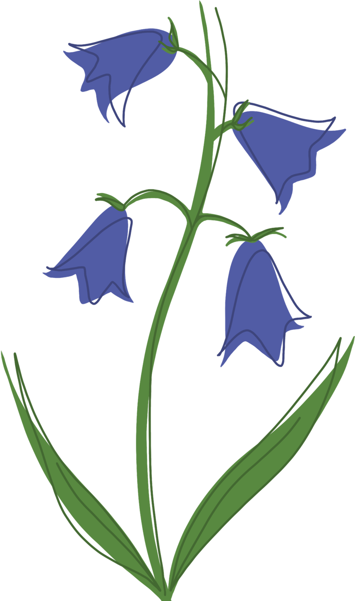

Projects.
back to home.



all of these projects can be located on my GitHub.
For this project I used Java to develop a Marble Solitaire game that is fully playable in the console. I used the Model View Controller design so that I could easily go back and make changes or add features. For example, I first started with the classic English Solitaire board, then I added on the European and Triangle Solitaire boards as well.
This was my first project using Python. I implemented a fun console Hangman game where there were over 200 words that the program would randomly choose from. I also used some console art that displayed the Hangman figure and how many limbs he had left. It was a fun project and I'm looking forward to making many more in Python!
I pair-programmed a Flood It (note: this site is not my own) game in Java that had a flooding or cascading effect. I used the Impworld Library to implement an interactive display for the user to play the game. It showed how many lives were left, and the board. Size of the board and how many colors used can be specified when initializing the game. There was also a default constructor that automatically set the amount of colors to four, and the board size to 10 by 10.
I pair-programmed a game in Java called NBullets which was a shooter game which started off with n bullets. The graphics — which were created using the Funworld Library — were fairly simple as everything was just a circle, but "ships" would randomly spawn at the edges of the screen. The screen also displays the number of ships destroyed and bullets left. Another feature we added was that when a bullet hits a ship, the speed and size of the bullet increases as well as the bullet exploding into multiple other bullets. These new bullets keep track of the amount of times the "explosion" has happened, and more and more bullets will come from the "explosions".
I also pair-programmed a Maze Generator using Java that randomly produces a solvable maze every time it is run. The program utilizes Kruskal's Algorithm and Union Find to create these solvable mazes. We programmed it so that the generator automatically creates a 20 by 20 cell maze, but it is easily changeable. The maze display was created using the Impworld Library, and it features a start and end cell denoted by their different coloring.
I created this website using HTML, CSS, and my own artwork! I drew everything excluding the two gifs on the home page (which I've linked below), but I plan on changing those soon to something of my own design. This is my first website, and I had so much fun making it! I plan on developing and designing many more in the future, so feel free to reach out to discuss any freelance work I can do for you!